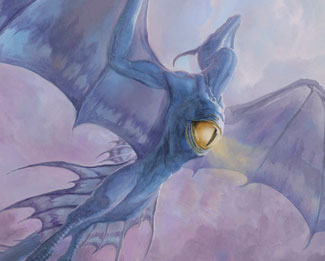

作者：Mark Rosewater
译者：Pa_Cha
原文地址：https://magic.wizards.com/en/articles/archive/making-magic/nuts-bolts-initial-playtesting-2013-02-11
译文地址：https://tieba.baidu.com/p/4064525857
此文被度娘吞掉了后半段，遗憾的是，全网都找不到剩下的那一半了。我有时间的话自己重新翻译吧。
四年前，我开始撰写“螺母和螺栓”专栏。在这里我会带领大家一窥卡牌背后的设计技巧。首篇文章我介绍了卡牌代码，R&D利用它来追踪卡牌文档中每张单卡。接着我又谈到了设计骨架，设计者会用它来规划卡牌系列的结构。之后我又讲了设计骨架的填充，填充工作是从普通牌开始的。去年我介绍了将其他稀有度卡牌填充进设计骨架的方法。今天就让我们继续下一步工作。刚刚发售的兵临古城想必对大家来说还是很新鲜的，那么我就准备用它作为本文的范例。（我会尽量照顾并不准备设计自己万智牌系列的读者们。）
材料汇总
书接上回，我们已经搭建好设计骨架并将之填充完毕了。目前系列中的每个位置都已经对应有一张单卡了。我们工作难道还没有完成吗？恰恰相反，实际上我们的工作才刚刚开始。之所以要把系列中的每个位置填充上对应单卡，就是为了进行设计工作的下一步——对局测试。卡牌系列设计的特点就是要经历一个不断重复的过程，每次都要按照相同的步骤进行，而每一次都会做出一些补充性的改变。这个重复的过程包括以下步骤：
- 制作单卡。
- 对那些单卡进行对局测试。
- 从对局测试中发现问题。
- 根据所发现的问题对卡牌进行修改，有时需要做出新的单卡。
- 再次回到第二步。
设计骨架之所以很重要，是因为你需要通过它来确定卡牌文档的结构，从而保证卡牌间在具有一定关联度和指向性的情况下开始对局测试。你的卡牌系列要具有某些特色内容。虽说这些内容不一定和系列最终成型时一样，但它们的存在是很重要的。毕竟你可以对已有内容进行修改，却很难无中生有。
我还应该告诉大家的一点就是，在R&D，我们通常会在普通牌设计完毕后开始上述重复的过程。进行全部由普通牌进行的对局测试足以让设计者确定设计工作的方向是否正确。我们会让设计骨架的填充和对局测试的重复过程同时进行。因为这样做有一定难度，所以在螺母和螺栓系列文章中我建议大家首先完成设计骨架的全部填充工作，再开始对局测试。因为填充过程有助于设计者更好地体会卡牌系列的整体思路。
今天就让我们使用已经被计出的全部普通牌来开始对局测试吧。我建议在前期设计就进行小规模对局测试，以免后期难以对系列进行修改。在R&D，我会把对局测试范围限制在设计团队内部。在进行对局测试时，需要关注以下几点：
- 趣味点是什么？这一点最为重要。此时对局环境还尚未成型，你只完成了一部分卡牌的设计。全普通牌对局测试只是试水性质的，你要通过它观察这个卡牌系列的潜力。要特别关注那些令你满意的单卡。
- 无趣内容有哪些？这一点同样重要。倘若一张或几张单卡在对局测试中很无趣，你也要把它们记录下来。时刻牢记设计工作进行到这个环节时，没有任何内容是板上钉钉的。任何单卡、机制或主题都可能被剔除掉。
- 已有卡牌是否实现了你的预期效果？对局测试最有价值的一点就是，它会让你对卡牌的认识不仅停留在“想”上，而是要付诸实践。一些效果会与你想象中有所不同。在实际对局中，一些卡牌要么效果过弱，要么毫无意义。
- 是否存在使人困惑的内容？一种常见的情况就是，一些貌似简单的内容实际操作起来其实很复杂。有很多内容只有在对局中实际使用才会发现它所存在的问题。在全普通牌对局测试中，经常要作出的评价就是“把某张牌改成非普通牌（或更高稀有度）。”我总开玩笑说，很多专为普通牌位置设计的单卡最后却都没能成为普通牌。这不但在万智牌专业设计工作中很常见，相信您在自己的设计中也会遇到这类问题。
- 系列主题是否得到了体现？我所秉持的设计理念之一就是“如果你的系列主题没有在普通牌上得到体现，那么它就称不上是主题。”在全普通牌对局测试中，我应该能够感受到整个系列的主题内容。如果感受不到的话，问题就大了。不过一般来说，你总会在测试中感受到一些内容，但可能会与预期有所偏差。如果这种偏差你能接受的话，也就不算是什么问题。
为了帮助大家理解，我将以兵临古城的首次全普通牌对局测试为例。首先我先来介绍一下兵临古城系列中各个机制当时的样子：
欧佐夫：我们设计了一个每当生物死去便会触发效果的机制。可惜我忘了这个机制的名字了。
底密尔：我们设计了一个磨牌库的机制，即“将牌库顶牌放入坟场，直到翻出一定数量的地牌。”磨牌库的效果后来虽然得到了保留，但并未被设定为一个关键词异能。
古鲁：我们设计了一个名叫“凶暴（rowdy）”的机制，即每当生物对一位牌手造成战斗伤害便会与那位牌手所操控的一个生物互斗。
波洛斯：就是大家最后看到的协战机制。
析米克：我们当时采用的就是进化机制，只不过效果只会对生物的力量产生影响。
头几次对局测试会反映出很多问题（为了加快速度，我把开始的几次对局测试放在一起来说）。进化和协战机制都很有趣。磨牌库机制对于热衷于以这种方式取胜的玩家来说是很有趣的，但对此浅尝辄止的玩家却会感到有些无趣。凶暴机制效果过强。欧佐夫的机制由于既令人困惑又不易进行配合，因此马上就被否决掉了。
宏观规划

鉴于本文是“螺母和螺栓”专栏中的一篇，我还是需要带领大家回顾一下我曾在“Designing for”系列中提到过的一些内容。
一个卡牌系列所包含机制的核心就是你设计工作中所围绕的机制元素。从本质上说，你只有在确定了某些需要优先考虑的内容后才会开始围绕它进行设计。这些优先考虑的内容之所以重要，是因为当你遇到两个相互冲突的设计方案时，可以去选择那个更贴合优先考虑内容的方案。以兵临古城为例，机制核心已经很明确了——公会，具体说就是前面提到的那五个（欧佐夫、底密尔、古鲁、波洛斯和析米克）。也就是说，首次对局测试的目的就是确定每个公会都能做些什么。这其中不仅包括公会机制，还有每个公会带给玩家的感觉。
请记住您总应该从最难设计的部分开始入手，这样才会有尽量多的办法处理设计难点。在兵临古城中，公会首当其冲，那么公会专属机制自然就成了设计难点，因此它就是入手之处。
在第一阶段对局测试完成后，我会问自己如下几个问题：我是否已经找到了每个公会的专属机制？对析米克和波洛斯来说，答案是肯定的。对底密尔来说，答案是也许，因为我们还需要进行进一步的完善工作。对古鲁来说，我持怀疑态度，我们还需要与开发团队一起努力解决它效果过强的问题。对欧佐夫来说，答案是否定的。
析米克和波洛斯的单卡可以开始下一步工作了，即在不考虑公会机制的前提下去审视其他普通牌。如何做到在填充设计骨架的同时与公会机制建立配合呢？举例来说，我准备设计一个绿色普通白板生物。在已知拥有进化机制的情况下， 我会有意识地把它设计得拥有高力量或高防御力。（此时进化效果已改为同时影响生物的力量和防御力。）通常情况下，一个4/1或1/5的绿色普通生物或许并没什么吸引力，但在一个拥有进化机制的系列里就变得非常有意思了。总之，关键要做到在观察设计骨架需求的同时，去思考是否能够同时迎合与公会机制配合的要求。
对于底密尔来说，我必须找出让磨牌库机制与并没有很强磨牌库需求的套牌相兼容的办法。我采用的方法就是通过对系列骨架的观察，确定是否可以设计出既能满足现有需求，又与磨对手牌库效果相关的单卡。最后，我往系列中添加了一些与坟场中卡牌相关效果的单卡。这样一来，那些只带有些许磨牌库效果的底密尔套牌便也可以对此效果加以很好的利用。死亡将至就是我们为了达到这个目的而设计出的一张单卡。
对于古鲁机制的问题，我代表设计团队与Dave Humpherys（该系列的首席开发）进行了探讨。我要让他告诉其他开发人员，一定要意识到当前凶暴机制的危险性。Dave帮我调整了凶暴机制的费用，以使其更加平衡。在进行了几盘对局测试后，我们决定把凶暴改为“增幅击（kickboxing）”——另一个涉及互斗效果的机制（在生物释放时额外支付一个类似增幅的费用，则该生物在进场时与另一个生物互斗）。要知道在尝试修改古鲁机制的时候，我一直都着力于法术力费用的调整以使机制可行，却很少关注到它与其他卡牌混合后的效果。直到我认为这个机制可行后，才意识到专门再花时间为它设计支持性单卡完全不值得。
至于欧佐夫，我们需要从头做起。和古鲁一样，我还是把主要精力集中在机制方面。这次我们尝试了一个名叫“消沉”的新机制，由Mark Gottlieb设计。带有消沉机制的非地永久物具有“每当该永久物下一次成为一个咒语的目标时，将其牺牲。”
接下来一个问题就是，那些不包含公会机制的卡牌位置将由什么单卡来填充呢？答案就是基本单卡。当你已经很好掌控了卡牌系列的功能后，基本单卡的加入既可以让已有卡牌在对局中运作起来，也有助于发现卡牌系列中新的关注点。
您肯定发现了，这个系列中的不同部分都在按不同的方式发生着改变。这完全没问题。卡牌系列的设计是一个不停变化的过程，因此每个部分不可能以相同的步调发生改变。至此，你就可以开始对卡牌系列的整体内在环境进行定义了。这个步骤应该从限制性最强的机制开始。请牢记，限制性是你的好朋友，选择上的局限经常可以帮助你更好地勾勒出每个机制都需要起到什么作用。
举例来说，我们就花了很长时间来确定欧佐夫的作用。直到最后阶段，我们才意识到欧佐夫应该拥有一个倾向于生物和战斗的机制。这个想法最终指引我们找到了这个关于咒语释放的机制。
粘合剂
如果说第一阶段是确定机制核心，第二阶段就是发现那些能够支持机制核心的卡牌。那么第三阶段按我的话说就是粘合阶段。我们还是以兵临古城威为例。
经过了一番周折后我们终于为每个公会都设计了一个称心的的机制。一旦确定了公会关键词机制后，我们就可以尝试向骨架中填充可以与公会功能相配合的卡牌了。下面我再来说说那些可以同两个不同公会形成配合的单卡。最适合它们的位置无疑就是多色牌。
我准备以白色为例。同沾白多色卡牌可以产生配合的公会是波洛斯和欧佐夫。我希望沾白卡牌中可以与这两个公会形成配合的单卡数量各占一半。也就是说，全部沾白普通单卡中能与波洛斯色组和欧佐夫色组很好互动的会各占25%。剩下的50%我会让它们能同时与这两个公会都有配合。这组比例成为另外几个颜色构思的指引，并可能会随着设计的推进而上下浮动。
为什么设计只能与一个公会产生配合的单卡如此重要呢？为何不是每张多色牌都能同时与两个公会有配合呢？首先，这是不可能的；第二，这样做很重要，尤其在轮抓时要让牌手可以选到真正需要的单卡。把卡牌泛用度做得越低，它在轮抽时被其他玩家劫胡的可能性就越低。
在继续下一步前，我想强调的是，由于篇幅原因我对上述过程进行了简化。比如说，我们其实还为每个公会个指定了一个首选致胜手段和一个次选致胜手段。由于公会功能的多样性，这样便可以使偏爱某一公会的玩家每次都以不同的方式进行对战。
对于前面提到的那个比例，我还想强调几点。第一，水印牌（那些与某个公会有紧密联系的单卡）的数量是可以达到50%的。但这类单卡虽然带有某个公会专属机制，但却并不意味着它在其他公会套牌中就没有用武之地。第二，还有一些单卡具有很强的泛用性，且并没有某个公会的专有特征。举例来说，白色就需要一张普通稀有度的结界去除单卡。那么这张牌显然就与波洛斯及欧佐夫没有什么直接联系，但每套牌却都会在特定情况下使用到它。这类单卡也许会对25/25/50的比例产生一些影响。
对于前面提到的那个比例，我还想强调几点。第一，水印牌（那些与某个公会有紧密联系的单卡）的数量是可以达到50%的。但这类单卡虽然带有某个公会专属机制，但却并不意味着它在其他公会套牌中就没有用武之地。第二，还有一些单卡具有很强的泛用性，且并没有某个公会的专有特征。举例来说，白色就需要一张普通稀有度的结界去除单卡。那么这张牌显然就与波洛斯及欧佐夫没有什么直接联系，但每套牌却都会在特定情况下使用到它。这类单卡也许会对25/25/50的比例产生一些影响。
正确设计机制核心很关键。设计正确的支持单卡也同样重要。但真正让一个卡牌系列出彩的则是做出那些正确的粘合剂单卡。假如做法正确的话，那些粘合剂单卡并不显眼。一些最好的粘合剂单卡正是那些不具有明确意图的卡牌。它们也许会向玩家展现你的某个设计方向，而玩家们也会逐渐发现它们的其他用途。正是这种探索发现的过程，会让这个游戏对玩家产生更强的吸引力。
The Quirks of an All-Common Playtest
The reason I suggest starting with an all-common playtest is to ensure that your set is communicating its basic message at the core of the design. Remember that more than two-thirds of all the cards the players will see in Limited will be the commons. Common cards are the hardest to design, so I want to make sure you all put your time and energy first in making your commons sing. That said, there are a few quirks of an all-common playtest I want to point out:
#1: It’s Harder to Come Back
There are things in Magic that we keep out of common. For example, we tend to avoid making common cards that can kill multiple creatures, especially permanents that either do it repeatedly or two-for-one the opponent by destroying something while also providing you with a resource (the most basic example is a creature with an “enters the battlefield” destruction/damage effect). These kinds of cards are what help players turn the game around. This means that all-common playtests don’t have much of a catch-up feature. If one player gets ahead, there is little the other player can do.
#2: There’re More Stalemates
We also tend to scale creature size based on rarity. For example, only green and blue tend to have a creature 5/5 or greater at common. This smaller overall size makes for less gradation between creatures, making all creatures a lot closer in size. This leads to more stalemates because it’s a lot easier for creatures on both sides to be roughly the same size.
#3: The Game Play is More Generic
Another thing we scale by rarity is the quirkiness of the effect. Commons do more basic, straightforward things, while higher rarities tend to get to play more among the edges. This will make the game play more similar from game to game and will keep all games closer to the norm of a default game of Magic.
#4: There’s More Repetition
Common playtests (especially small sets) just don’t have as many cards as a full set will have. This means you’ll see the same cards more often. One of the rules I always use is what I call the “Take Two” rule. The Take Two rule says that you should not play more than two of the same card (unless there’s some element of the set that is trying to get you to strategically play more—think the ripple mechanic from Coldsnap). If you get more than two copies of a card, I let players trade back cards for random cards of the same color.
The biggest lesson, though, is this: An all-common playtest is not about the environment. Not yet. The initial playtests are about getting a feel of the individual cards and mechanics. As you iterate and start molding the common cards, the environment will start to form, but that should not be your focus in early playtesting. Your initial job is figuring out what pieces are working.
Another tip I’ll give for the early playtests is this: Make sure your playtesters don’t just play to win. The environment isn’t balanced yet. The goal in the early playtests is to experience and to learn. To do that, you have to play with all the cards, which means you have to actively track down things you haven’t tried before. A common trick I’ll do is to either assign colors to playtesters to ensure every color gets played or require the playtesters not play with the color combinations they played with before. Also, encourage your playtesters to experiment.
Final Notes
Before I wrap up for today, a few final things I’d like to point out:
- Early playtesting is not as fun as normal Magic: There is a great thrill to trying out things for the first time, but make sure your playtesters don’t judge the fun of the playtest against normal Magic. As I pointed out above, the all-common playtests leaves out a lot of things that make actual Magic fun.
- Take notes: There’s a lot going on and it’s crucial that you capture as much data as you can. I always have a notepad so playtesters can yell out comments as they happen. Seriously, it is crucial you write your notes down as they happen. Also, R&D always follows up playtests by having each player write up a short description of his or her playtest experience.
- Push for more design comments than development comments: If a card is overcosted, that’s fine to jot down, but the key to the early playtests is figuring out the design elements. Whether something is fun to play is far more important than how it will play in Standard. Yes, at some point, you will need that information, but these playtests are just too early for it.
- Iterate, iterate, iterate: See my list up above. After a playtest or two, take notes and figure out what you can improve. Then improve it before you play again.
- Also, playtest, playtest, playtest: Another common danger is designers talking endlessly about a card file rather than sitting down and playing it. Nothing is going to help you better figure out what needs to get done than playing with the cards. You aren’t designing a car without driving it, and you aren’t going to make a card set without playing it.
Aw Nuts (and Bolts)
That’s all I have for you today. I hope you enjoyed my yearly jaunt through Design 101. As always, I am eager to get feedback on today’s column through my email, this column’s thread, or any of my social media (Twitter, Tumblr, and Google+).
Join me next week when I explain how to improve upon nature.
Until then, may you have a playtest where your notebook fills up.